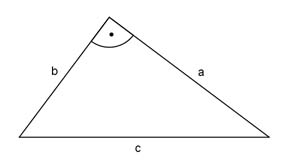

Pythagoras Aufgabe 1 Wie lang ist die Kathete a in cm, wenn die Kathete b = 7,8 cm und die Hypotenuse c = 9,8 cm lang sind?  c2 = a2 + b2 | -b2 a2 = c2 - b2 a2 = 9,82 cm2 - 7,82 cm2 = 35,2 cm2 |√ a = 35,2cm2 a = 5,9 cm
Pythagoras Aufgabe 1 Wie lang ist die Kathete a in cm, wenn die Kathete b = 7,8 cm und die Hypotenuse c = 9,8 cm lang sind?
